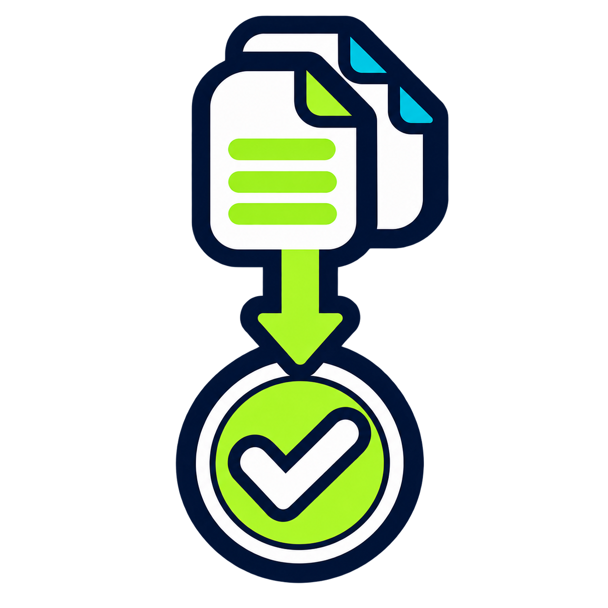

Unir PDF
Combina varios PDF en el orden que elijas, sin registro y sin subir tus documentos.

Aplicaciones sencillas para resolver en minutos tareas que normalmente llevan horas.
Combina varios PDF en el orden que elijas, sin registro y sin subir tus documentos.
Combina muchos archivos .xlsx en un solo libro y conserva el nombre de origen.
Encuentra filas añadidas, eliminadas y valores modificados en dos versiones.
Compara rutas, tamaños y, si quieres, el contenido mediante SHA-256. Solo lectura.
Obtén un ranking por tamaño y descarga el resultado como CSV. No borra ni mueve nada.
Convierte JPG, PNG y otros formatos compatibles sin subir tus imágenes. Conserva intactos los originales.
Prepara una vista previa y aplica nombres únicos únicamente después de confirmarlo.
Convierte varios vídeos a H.264/AAC y conserva intactos los originales.
Crea una vista previa y copia las fotografías a carpetas por año y mes.
Extrae las tablas de varios PDF digitales y conserva su archivo y página de origen.